A monitor is an output device that displays text, images, videos, and other visual content from the computer. It allows users to view data, applications, and on-screen activities clearly.


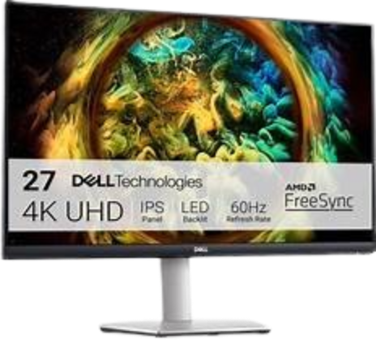
Keyboards are the primary text input devices for computers, used to enter letters, numbers, symbols, and commands. From the familiar QWERTY layout to specialized gaming and ergonomic designs, they come in different types to match different needs and preferences. Along with standard typing keys, keyboards also include function keys that help users carry out specific commands and interact with programs more easily.


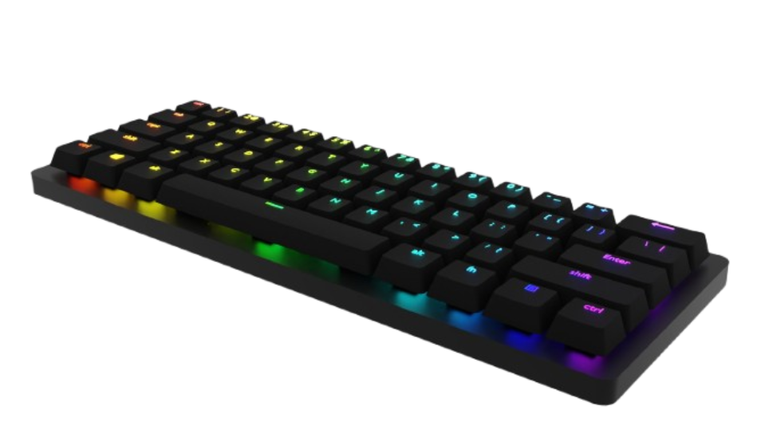

Used to control the pointer on the screen, making it easier to click, select, drag, and open files or programs. From its early ball-tracked design to today's optical and laser versions, it has remained one of the most familiar tools for navigating a computer. When moved across a flat surface, it helps guide the cursor and makes on-screen interaction quicker and more precise.


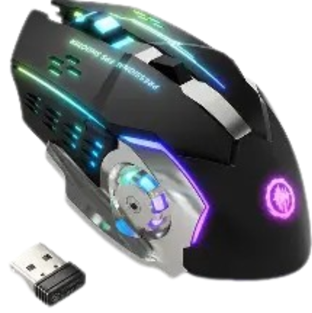
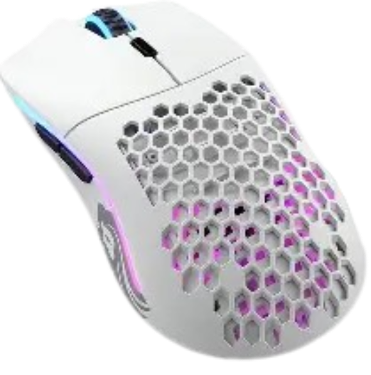
Speakers are output devices that produce sound from the computer, allowing users to hear music, videos, notifications, and other audio clearly. Speakers bring digital content to life and make the experience more engaging, whether for entertainment, communication, or everyday use.


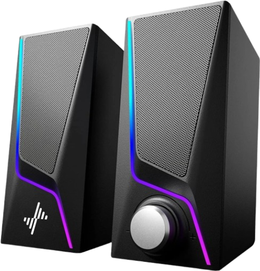
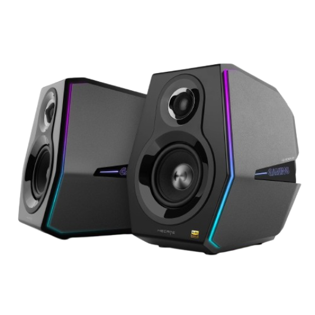

Webcams are input devices that capture live video and images for the computer. Commonly used for video calls, online meetings, recording, and other visual communication tasks, webcams make it easier for users to connect and share in real time.


Headphones provide personal audio output, ideal for private listening or when you need to focus without disturbing others.

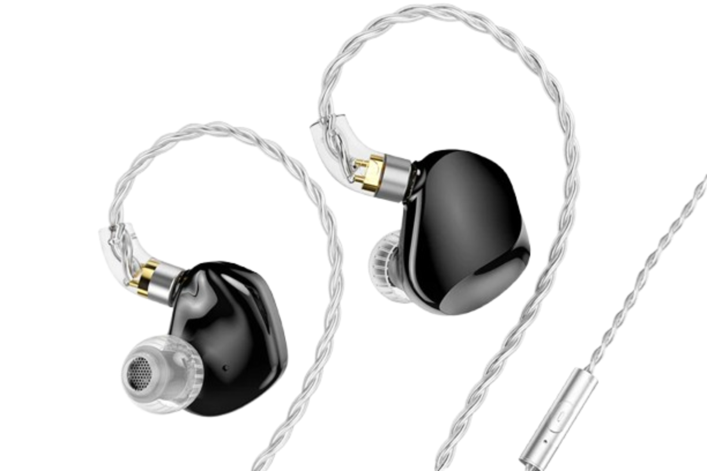

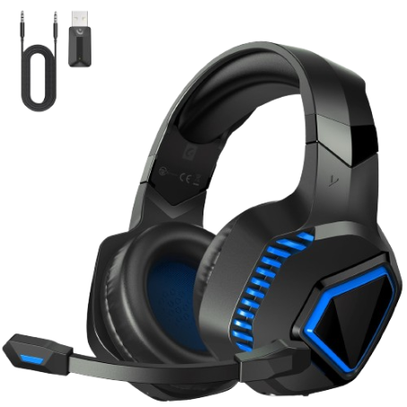
An input device that captures sound and voice for the computer. They allow users to speak, record audio, join video calls, and use voice commands more clearly, making communication and recording easier in everyday digital activities.
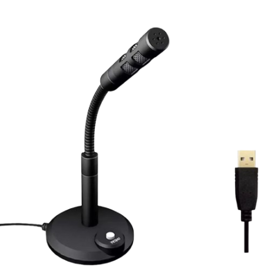
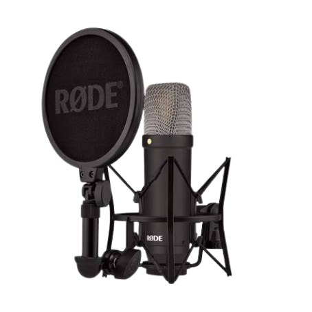
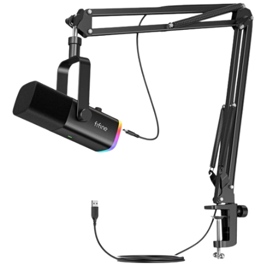


The CPU, or processor, is the main component responsible for carrying out instructions and processing data in the computer. Often described as the brain of the system, the CPU interprets and computes instructions, performs calculations, and manages tasks that allow programs and system operations to run properly.


The main circuit board that brings the computer's essential parts together. It connects components like the CPU, RAM, and storage, allowing data and power to move through the system as everything works together.
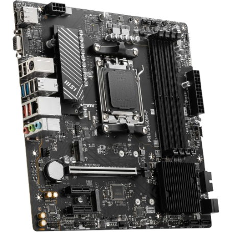


RAM is a temporary memory component that stores data currently being used by the computer. Often compared to short-term memory, RAM gives the CPU quick access to the information needed for running programs and switching between tasks more smoothly. Unlike long-term storage devices like an HDD or SSD, the data in RAM is erased when the computer is turned off.
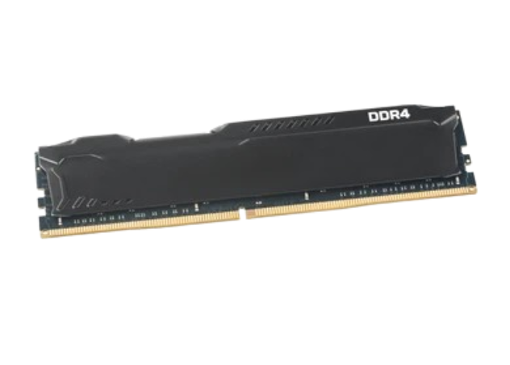
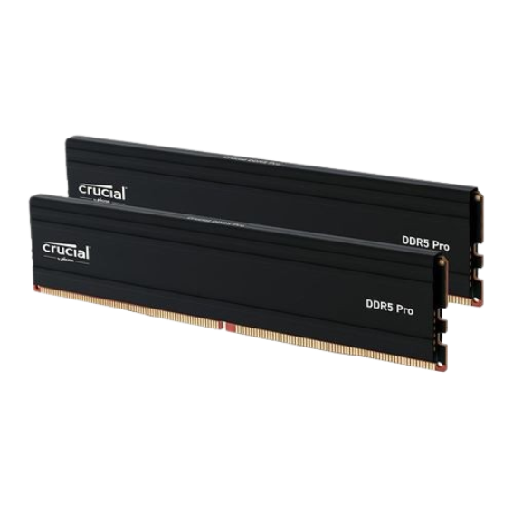


Read-only memory is a type of permanent memory that cannot be changed. ROM is critical since it stores permanent data and instructions for the desktop computer or laptop to boot up. Even after the computer is powered off, the ROM still retains the data necessary to start the computer up again.


The GPU, or graphics card, is responsible for processing and rendering visual data in the computer. It handles images, videos, animations, and other graphical effects, helping everything appear properly on the screen. Because it manages how visual content is displayed, the GPU plays an important role in gaming, media, and other graphics-heavy tasks.


An SSD is a storage device that saves data using flash memory. It loads files, programs, and the operating system faster, which helps improve the overall speed of the computer.

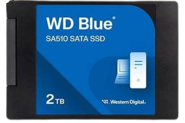


The power supply unit (PSU) converts wall power to low-voltage regulated DC power for the computer's components. It ensures stable power delivery with sufficient wattage and efficiency for reliable operation.


An HDD is a storage device that saves data on spinning magnetic disks. It is commonly used for storing large amounts of files, programs, and system data over a long period of time.